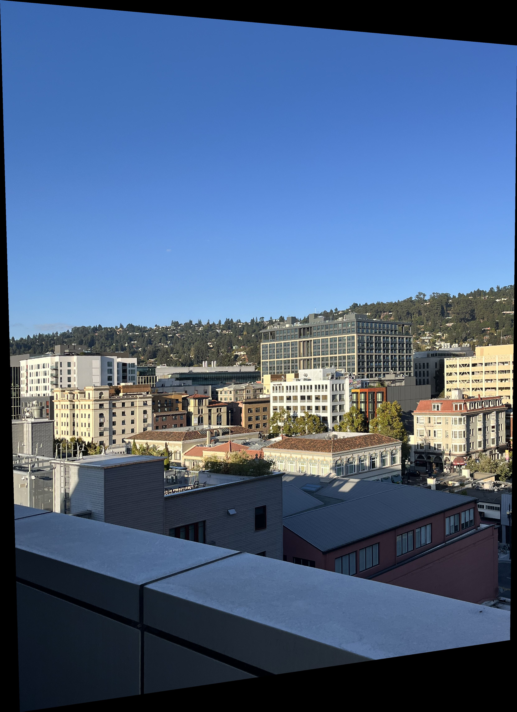
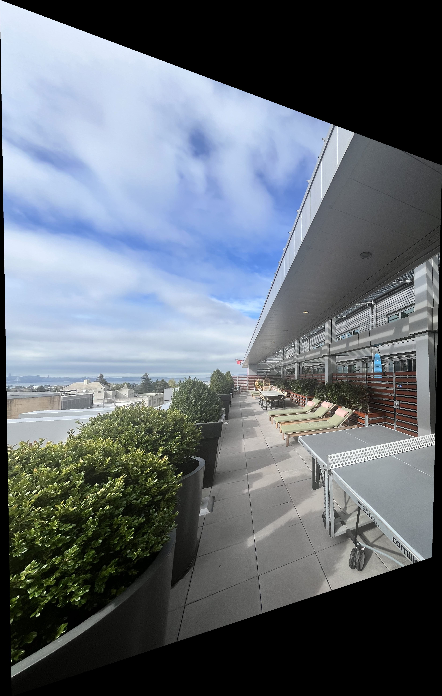
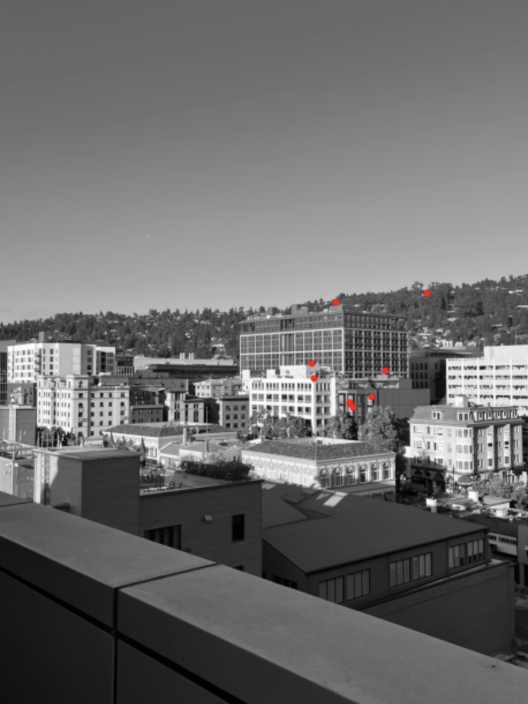

CS 180: Computer Vision and Computational Photography
Project Overview
In this project, I experiment with Image Homography - projecting an image on another plane surface that is not the image plane. An alternative name for this Perspective Projection Transformation. Finally, I will take three groups of three photographs (all at the same Center of Projection) and create an image mosaic (similar to an image panaroma taken on an iPhone) by registering, projective warping, resampling, and compositing them.
Part 1: Shoot the Pictures
In this step, I use the trusted iPhone to click pictures. I decided to take four groups of three pictures each which I will warp and mosaic together later in this report. The most important technique that I employed during my photo-taking endeavour was to make sure that the lens of my phone camera (serving as the center of projection) always remained the same. I simply rotate the phone about an axis line passing through the center of projection. The images of the Church were taken by my brother through who studies at Purdue.
Here are the original images.
View from my Patio - Image 1View from my Patio - Image 2View from my Patio - Image 3University Church Building at Purdue - Image 1University Church Building at Purdue - Image 2>University Church Building at Purdue - Image 3My Apartment Rooftop - Image 1My Apartment Rooftop - Image 2My Apartment Rooftop - Image 3Mansion - Image 1 (Taken from the Web)Mansion - Image 2 (Taken from the web)Mansion - Image 3 (Taken from the web)
Part 2: Recover Homographies
The next step involved calculating the homography matrices between pairs of images to recover the transformations required to warp one image into another. I implemented a function called computeH which uses point correspondences between two images to compute a homography matrix.
The homography matrix was used to warp images into the same perspective, which allowed for the subsequent blending step to create a seamless mosaic.
Mathematical Explanation
To compute the homography matrix, we use a set of corresponding points between the source and destination images. Let's denote the source points as \( (x, y) \) and the destination points as \( (x', y') \). The goal is to find a transformation matrix \( H \) such that:
\[
\begin{bmatrix}
w'x' \\
w'y' \\
w'
\end{bmatrix}
= H \cdot
\begin{bmatrix}
x \\
y \\
1
\end{bmatrix}
\]
The homography matrix \( H \) is a 3x3 matrix that relates the coordinates in one image to the coordinates in the other image:
\[
H =
\begin{bmatrix}
a & b & c \\
d & e & f \\
g & h & 1
\end{bmatrix}
\]
To find \( H \), we need to set up a system of linear equations using multiple point correspondences. For each pair of corresponding points, we get two equations:
\[
\begin{cases}
ax + by + c = wx' \\
dx + ey + f = wy' \\
gx + hy + 1 = w
\end{cases}
\implies
\begin{cases}
ax + by + c = (gx + hy + 1) x' \\
dx + ey + f = (gx + hy + 1) y'
\end{cases}
\implies
\begin{cases}
ax + by + c - gx x' - hy x' = x' \\
dx + ey + f - gx y' - hy y' = y'
\end{cases}
\]
Rearranging these equations gives us a system of equations that can be represented in matrix form:
\[
\begin{bmatrix}
x & y & 1 & 0 & 0 & 0 & -xx' & -yx' \\
0 & 0 & 0 & x & y & 1 & -xy' & -yy'
\end{bmatrix}
\begin{bmatrix}
a \\
b \\
c \\
d \\
e \\
f \\
g \\
h
\end{bmatrix}
=
\begin{bmatrix}
x' \\
y'
\end{bmatrix}
\]
\[
A \mathbf{h} = \mathbf{b}
\]
Where \( A \) is a matrix that depends on the source and destination coordinates, \( \mathbf{h} \) is a vector containing the unknown elements of the homography matrix, and \( \mathbf{b} \) is a vector of destination coordinates. Given enough correspondences, we can solve this system of equations for \( \mathbf{h} \) using a least squares approach.
Least Squares Solution
To solve for the homography matrix elements, we need at least four pairs of corresponding points, which provides eight equations. More correspondences provide an overdetermined system, which we can solve using the least squares method. The least squares solution minimizes the error between the predicted destination coordinates and the actual coordinates.
The least squares solution can be found by solving the following equation:
\[
\mathbf{h} = (A^T A)^{-1} A^T \mathbf{b}
\]
This equation provides the best fit for the homography matrix by minimizing the squared differences between the actual and projected points.
Part 3: Warp the Images
Using the computed homography matrix, I applied inverse warping to transform the images into a common perspective. The inverseWarpImage function was used to project an image onto the final canvas and align it properly. The results of the individual warped images were visualized as intermediate steps.
Warped Patio Image 1 from 2Patio Image 2 unchangedWarped Patio Image 3 from 2
Warped University Church Purdue Image 1 from 2University Church Purdue Image 2 unchangedWarped University Church Purdue Image 3 from 2
Warped Rooftop Image 1 from 2Rooftop Image 2 unchangedWarped Rooftop Image 3 from 2
Warped Mansion Image 1 from 2Mansion Image 2 unchangedWarped Mansion Image 3 from 2
Part 4: Blend the Images into a Mosaic
After aligning the images, the next step was to blend them together seamlessly. I used a distance transform-based blending technique to ensure smooth transitions between overlapping images. The distance transform values were normalized and used as blending weights, providing a feathered transition across the overlapping areas. Here is an example of the final mosaic.
The distance transform sets each pixel inside a region (here, inside a projected image's bounding box) to be the distance to the nearest edge. We'll be using Euclidean distance as the measurement, and the final result is normalized to range from 0 to 1.
These are the normalized distance transforms for the images of the view from the patio
Normalized 0-1 distance transform of Patio 1 imageNormalized 0-1 distance transform of Patio 2 imageNormalized 0-1 distance transform of Patio 3 image
One note on implementation detail: My algorithm of generating the canvas of the final stitched image was as follows: I first figure out what is the eventual extent, what I call as min_x_mosaic, min_y_mosaic, max_x_mosaic, max_y_mosaic. Then I place each image on the final canvas. So now I have my three images on the same final canvas dimensions. Now doing weighted average with three images with same dimension (the final canvas dimension) is relatively easier.
Creating the Mosaic of the view from my Patio
View from my Patio - Source Image 1View from my Patio - Source Image 2View from my Patio - Source Image 3
First (Warped) Image of Patio on final canvasSecond Image of Patio on final canvasThird (Warped) Image of Patio on final canvas
Final Mosaic of Patio Images
Creating the Mosaic of the view of the University Church Purdue
University Church Purdue - Source Image 1University Church Purdue - Source Image 2University Church Purdue - Source Image 3
First (Warped) Image of University Church Purdue on final canvasSecond Image of University Church Purdue on final canvasThird (Warped) Image of University Church Purdue on final canvas
First (Warped) Image of Mansion on final canvasSecond Image of Mansion on final canvasThird (Warped) Image of Mansion on final canvas
Final Mosaic of Mansion Images
Part 5: Image Rectification
One of the applications of homographies is image rectification. This involves transforming an image so that a particular plane becomes fronto-parallel, effectively correcting the perspective distortion. Below is an example where I rectified an image of a room.
Original Image of a PaintingRectified Image of the Painting (Look at the the tiny table, its now a square)
Original Image of my study tableRectified Image of my study table (Look at my laptop and notebook, they are perfect rectangles now)
Part 6: Harris Corner Detection
In the first step to achieve automatic feature mapping, we need to find the interest points. The Harris Corner detector focusses on finding the "corners" of an image. Below is an example of the Harris interest points for two of the images of the view from my patio.
Key points to note: I updated the provided Harris Corner Detection - I updated the minimum distance between corners from 1 to 2 (so that the corners are not cluttered) and I added a threshold parameter to filter the corners based on the h value. This threshold is like a hyperparameter and needs to be changed for each image. For images of my patio, I chose the threshold to be 100,000.
In addition, all the image processing done in this part and the ones ahead will be done on grey-scaled versions of the previous images as we do not multiple channels to compute feature descriptors and correspondences.
Corners on Patio Image 1Corners on Patio Image 2
Part 7: Adaptive Non-Maximal Suppression
Harris interest points are very clustered together, with a lot of redundant information. Adaptive non-maximal suppression (ANMS) is an algorithm to more evenly distribute the interest points around the image, so that feature matching is a lot more effective.
Corners on Patio Image 1 ANMSCorners on Patio Image 2 ANMS
Part 8: Feature Descriptor Extraction
Once we have interest points selected for each of our images, we need a representation for them in order to accurately match them with their corresondences in the warped image space. In order to do this, I first build a gaussian pyramid (not stack) for each image, and then sample 40x40 patches centred at the interest points taken from Part 7 but at pyramid level 2 (with coordinates approproately recalculated). For reference, the original image is at Level 0.
Once we have 40x40 image patches, I subsample (pick one in every 5 pixels) to get 8x8 patch representations. Finally, I add normalize these patches by subtracting the mean pixel intensity and dividing by the standard deviation pixel intensity for each pixel in the 8x8 patch. Here is an example of a feature descriptor for an image of the view from my patio.
An example of a feature descriptors I created for my first interest point of patio image 1
Part 9: Feature Matching (using David Lowe's Trick aka Soviet Grandma Trick)
With features extracted, the next step is to match features together between two images to form correspondences. In order to do this, I use an nearest neigbor approach. For finding feature correspondences between say image 1 and image 2, I iterate through each feature descriptor in image 1 and then compare the Euclidean distance between this and all the feature descriptors of image 2. I only store those feature descriptors maps who have a 1st-NN-Neighbor to 2nd-NN-Neighbor ratio less than 0.1 roughly following the suggestion from the MOPS paper.
Features selected from the first patio imageCorresponding features selected from the second patio image
Part 10: RANdom SAmple Consensus (RANSAC)
Although Lowe's trick does reduce the number of outliers, there will still inevitably be several incorrect pairs remaining. The issue with these incorrect pairs in the correspondence points is that least-squares is not very robust against outliers; a single pair of incorrect points can skew the least-squares result wildly, which also skews the computed homography.
To increase the robustness of least-squares when finding the desired homography, we can use RANSAC; we randomly sample 4 pairs of points, and compute the exact homography through these points, keeping track of the inliers (points that are correctly transformed by the homography) as we go. At the very end, we keep the homography that produces the most inliers. This ignores the correspondence points that do not follow the majority transformation, increasing the robustness against outliers.
Below is an illustration of the result of performing RANSAC on the matched features. In my experience through this project, RANSAC almost always gave me accurate feature maps.
This could be because the RANSAC threshold I use is very small (0.8), so I only am left with accurate feature maps.
Features selected from the first patio imageCorresponding features selected from the second patio image
Results
Comparing manual results with automatic results.
Please note: The only suprising result was the image of the church building. The RANSAC result is worse than the manual result but both have a prominent edge seam. The rest of the results look good.
Clearly, the coolest thing I learned was the patience to read a convoluted section of a research paper. It took me about 15 readings of the Adaptive Non-Maximal Suppression Section of the paper until I finally understood what was going on. This was a useful experience.